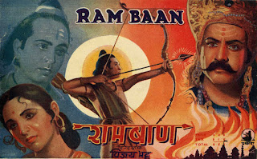

प्रेम अदीब एवं शोभना समर्थ की जोड़ी ने 1938 में अपनी पहली फिल्म industrial India के बाद 1954 तक कई फिल्मों में एक साथ काम किया। पौराणिक एवं धार्मिक फिल्मों का दौर था सो ज्यादातर फिल्में इन्हीं विषयों पर आधारित होती थी। प्रेम अदीब एवं शोभना समर्थ की जोड़ी उस समय राम एवं सीता की जोड़ी के रूप में बहुत प्रसिद्ध हुई। दोनों ने साथ में तथा अलग-अलग भी कई फिल्मों में राम एवं सीता के पात्र अदा किए।

प्रस्तुत गीत फिल्म मेघनाद एवं लक्ष्मण
युद्ध के दौरान लक्ष्मण के मूर्छित होने एवं हनुमान जी द्वारा सुषेण वैद्य के कहने
पर संजीवनी बूटी लाने के समय के दौरान हो रही देर पर राम की आकुलता- विकलता आधारित है। इसमें राम
अपने भाई लक्ष्मण को उठने को कह रहे हैं। यह गीत फिल्म रामबाण 1948 का है । इसके निर्देशक विजय भट्ट थे एवं राम सीताके पात्र
जैसा उपर बताया प्रेम अदीब एवं शोभना समर्थ ने अदा किए

ज्यादातर हम गायक की एवं संगीत की चर्चा करते हैं, गीत के हिट या चलने या ना चलने का पैमाना भी स्वर और संगीत ही मानते हैं; लेकिन पता नहीं क्यों गीतकार की मेहनत को उतना नहीं आंखा जाता, जबकि उनका योगदान किसी से भी कम नहीं होता। प्रसिद्ध गीत भी उसी तरह का माना जा सकता है। गीतकार मोती बीए ने कितने सुन्दर शब्दों में राम की व्यथा का वर्णन किया है, आईये गीत सुनते हैं।
स्वर-शंकर दास गुप्ता
संगीत-पं.शंकर राव व्यास
गीतकार- मोती बीए
उठ लखन लाल प्रिय भाई
दशा तुम्हारी देख राम की
अंखियां भर भर आयी
उठ लखन लाल प्रिय भाई
मात-पिता पत्नि की माया
भाई के कारण सब बिसराया
छोड़ आयोध्या का सुख तुमने
जोगी रूप बनाया
जिस भाई के लिए युद्ध में
प्राण की बाजी लगाई
उठ लखन लाल प्रिय भाई
पहले मुझे खिला कर खाते
और सुला कर सोते
अलग तुम्हारे कौन सभी तो
बाद राम के होते
स्वर्गपुरी के सुख (?) से
पहले पहुंची जाई
उठ लखन लाल प्रिय भाई
मात कौशल्या और सुमित्रा
जोवत बाट तिहारी
पंथ हेरती हाय उर्मिला
की अंखिया बेचारी
आँख मूँद के हुए तुम्ही क्या
तनिक दया ना आई
उठ लखन लाल प्रिय भाई
सीता रावण के घर बंदी
मेघनाठ चढ़ आयो
जगत कहेगा नारी के कारण राम ने बंधु गवाँयो
धीरज छूटो जात सभी का, कब से टेर लगाई
उठ लखन लाल प्रिय भाई